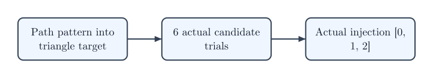
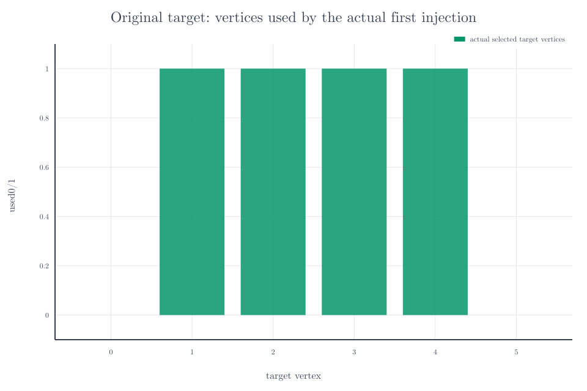
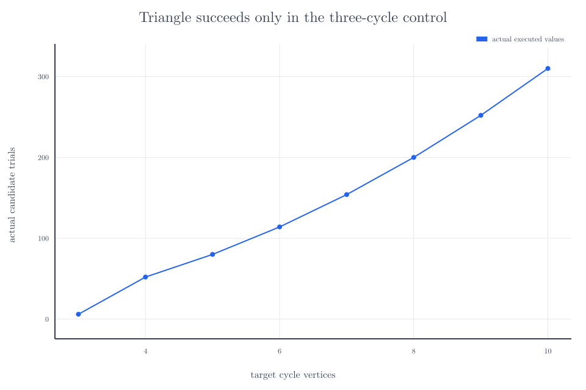
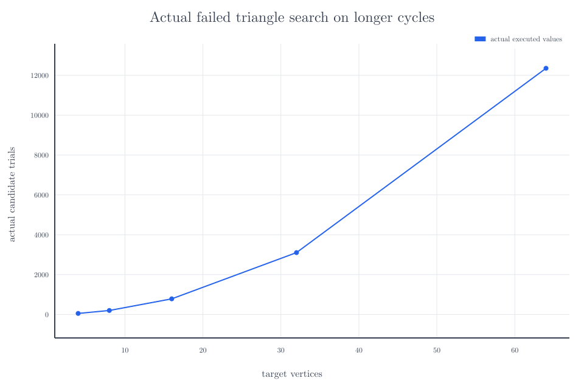

Subgraph matching: actual injective assignments and pruning
Abstract
Find an injective adjacency-preserving mapping from a pattern into a target. This API performs non-induced undirected matching: extra target edges are permitted. Actual candidate pruning and backtracking histories explain success or failure.
Mechanism and mathematical scope
Assign pattern vertices in increasing index order. For each target candidate reject an already used vertex, insufficient degree, or a missing target edge required by an already assigned pattern neighbor. Recurse on surviving assignments and undo them after a failed child. Return the first complete injection. Pattern nonedges impose no constraint, so a three-vertex path maps into a triangle. Normalization symmetrizes listed directions, removes duplicate edges and ignores loops. Worst-case injection search is exponential; this implementation also stores quadratic dense adjacency matrices.
A tiny actual producing history
The table and native concept diagram read the same producing execution. Every block below is a complete editable C++ program.
#include <dm/dm.hpp>
int main() {
namespace a = dm::algorithms;
namespace g = dm::graphics;
std::filesystem::create_directories("build");
std::vector<std::vector<int>> p{{1}, {0, 2}, {1}}, t{{1, 2}, {0, 2}, {0, 1}};
auto r = a::subgraph_isomorphism_trace(3, p, 3, t);
std::print("| actual depth | target | action | complete current mapping |\n| ---: | ---: | --- | --- " "|\n");
for (const auto &s : r.steps)
std::print("| {} | {} | {} | `{}` |\n", s.depth, s.target, s.action,
s.mapping);
std::print("Path into triangle found {}; nonedges are unconstrained.\n",
r.match.found);
g::Diagram concept_diagram(48, 1100);
concept_diagram.node("n0", {0, 0}, "Path pattern into triangle target");
concept_diagram.node("n1", {5, 0},
std::format("{} actual candidate trials",
r.candidate_trials));
concept_diagram.node("n2", {10, 0},
std::format("Actual injection {}", r.match.mapping));
concept_diagram.edge("n0", "n1").edge("n1", "n2");
concept_diagram.save_svg("build/subgraph_isomorphism_tiny.svg");
}| actual depth | target | action | complete current mapping |
|---|---|---|---|
| 0 | 0 | assign | [0, -1, -1] |
| 1 | 0 | used-prune | [0, -1, -1] |
| 1 | 1 | assign | [0, 1, -1] |
| 2 | 0 | used-prune | [0, 1, -1] |
| 2 | 1 | used-prune | [0, 1, -1] |
| 2 | 2 | assign | [0, 1, 2] |
| 3 | -1 | success | [0, 1, 2] |
Path into triangle found true; nonedges are unconstrained.

The retained original experiment
#include <dm/dm.hpp>
int main() {
namespace a = dm::algorithms;
namespace g = dm::graphics;
std::filesystem::create_directories("build");
std::vector<std::vector<int>> p{{1, 2}, {0, 2}, {0, 1, 3}, {2}}, t{
{1}, {0, 2, 3, 4}, {1, 3, 4}, {1, 2, 4, 5}, {1, 2, 3}, {3}
};
auto r = a::subgraph_isomorphism_run(4, p, 6, t);
std::print("Original triangle with pendant found {}; actual mapping `{}`.\n\n| target vertex | used by " "actual injection |\n| ---: | ---: |\n",
r.match.found, r.match.mapping);
std::vector<double> y;
std::vector<std::string> labels;
for (std::size_t i = 0; i < r.target_matched.size(); ++i) {
y.push_back(r.target_matched[i] ? 1 : 0);
labels.push_back(std::to_string(i));
std::print("| {} | {} |\n", i, y.back());
}
auto chart =
g::RPlot::barplot(y, labels, "actual selected target vertices",
{5, 150, 105});
chart.title("Original target: vertices used by the actual first injection").x_label("target vertex").y_label("used0/1");
chart.save_svg("build/subgraph_isomorphism_original.svg");
}Original triangle with pendant found true; actual mapping [1, 2, 3, 4].
| target vertex | used by actual injection |
|---|---|
| 0 | 0 |
| 1 | 1 |
| 2 | 1 |
| 3 | 1 |
| 4 | 1 |
| 5 | 0 |

Explicit controls
#include <dm/dm.hpp>
int main() {
namespace a = dm::algorithms;
namespace g = dm::graphics;
std::filesystem::create_directories("build");
std::vector<std::vector<int>> p{{1, 2}, {0, 2}, {0, 1}};
std::vector<double> x, y;
std::print("| target cycle size | triangle found | actual candidate trials | degree prunes | edge " "prunes |\n| ---: | --- | ---: | ---: | ---: |\n");
for (int n = 3; n <= 10; ++n) {
auto t = a::subgraph_cycle_graph(n);
auto r = a::subgraph_isomorphism_run(3, p, n, t);
x.push_back(n);
y.push_back(r.candidate_trials);
std::print("| {} | {} | {} | {} | {} |\n", n, r.match.found,
r.candidate_trials, r.degree_prunes, r.adjacency_prunes);
}
auto e = a::subgraph_isomorphism_run(0, {}, 0, {});
std::print("Empty pattern success {}, empty mapping {}.\n", e.match.found,
e.match.mapping.empty());
auto plot = g::RPlot::create();
plot.lines(x, y, "actual executed values", {37, 99, 235}).points(
x, y, {37, 99, 235}, 4).title("Triangle succeeds only in the three-cycle control").x_label("target cycle vertices").y_label("actual candidate trials");
plot.save_svg("build/subgraph_isomorphism_controls.svg");
}| target cycle size | triangle found | actual candidate trials | degree prunes | edge prunes |
|---|---|---|---|---|
| 3 | true | 6 | 0 | 0 |
| 4 | false | 52 | 0 | 20 |
| 5 | false | 80 | 0 | 40 |
| 6 | false | 114 | 0 | 66 |
| 7 | false | 154 | 0 | 98 |
| 8 | false | 200 | 0 | 136 |
| 9 | false | 252 | 0 | 180 |
| 10 | false | 310 | 0 | 230 |
Empty pattern success true, empty mapping true.

Actual selected work and sensitivity
#include <dm/dm.hpp>
int main() {
namespace a = dm::algorithms;
namespace g = dm::graphics;
std::filesystem::create_directories("build");
std::vector<std::vector<int>> p{{1, 2}, {0, 2}, {0, 1}};
std::vector<double> x, y;
std::print("| target cycle | actual candidate trials | actual backtracks | required edge tests |\n| " "---: | ---: | ---: | ---: |\n");
for (int n : {4, 8, 16, 32, 64}) {
auto t = a::subgraph_cycle_graph(n);
auto r = a::subgraph_isomorphism_run(3, p, n, t);
x.push_back(n);
y.push_back(r.candidate_trials);
std::print("| {} | {} | {} | {} |\n", n, r.candidate_trials,
r.backtracks, r.required_edge_tests);
}
auto plot = g::RPlot::create();
plot.lines(x, y, "actual executed values", {37, 99, 235}).points(
x, y, {37, 99, 235}, 4).title("Actual failed triangle search on longer cycles").x_label("target vertices").y_label("actual candidate trials");
plot.save_svg("build/subgraph_isomorphism_work.svg");
}| target cycle | actual candidate trials | actual backtracks | required edge tests |
|---|---|---|---|
| 4 | 52 | 12 | 36 |
| 8 | 200 | 24 | 168 |
| 16 | 784 | 48 | 720 |
| 32 | 3104 | 96 | 2976 |
| 64 | 12352 | 192 | 12096 |

API and interpretation
All row counts, neighbor IDs and dense geometry are validated before impossible-size early return. An empty pattern succeeds; a larger-than-target pattern fails after validation. Captured adjacency and mappings are actual native producer state. The API is explicitly non-induced, ignores loops and uses union-of-directions undirected normalization; it does not solve directed, labelled or induced matching.
Reusable producers, fixtures and histories live in the canonical C++ library. Captured records own their values and do not come from a separate report replay. Selected counters and record/scalar policies are specified at their API boundaries; they are not peak-byte or wall-time budgets. Synthetic structural inputs are controlled fixtures for these mechanisms.
References
Verified in the shared ten-document batch: 58 scoped native cases;20 directly
instrumented ASan/UBSan cases;90 executable public examples;416/416 definitions
across25 full scopes;10 hovers;1968 independent records/417332 checks;frozen
comparisons across all ten families with SIP returned-iterate correction
recorded;14 checkout/installed standalone headers and linked ten-family
consumer;40 executed programs and40 inspected figures with both exports.
Receipts: build/mepml-conversion/batch-374-383/.